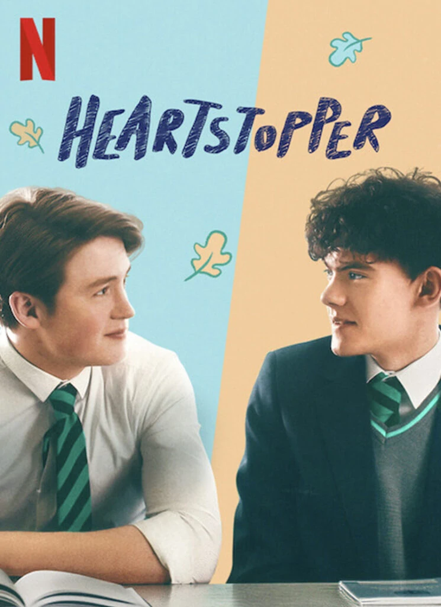

ถ้าตอนเด็กๆ คุณเคยดูหนังรักวัยรุ่นแล้วอินจนอยากมีความรักบ้าง เราคือเพื่อนกัน
และถ้าตอนเด็กๆ คุณรู้ว่านั่นเป็นได้แค่ฝัน ความจริงแล้วคุณนึกภาพตัวเองมีความรักแบบตัวละครไม่ออกเพราะคุณกับพวกเขาไม่ ‘เหมือน’ กันเลยสักนิด เราขอยกมือตบบ่าอย่างเข้าใจ
ในฐานะคนที่นับตัวเองเป็นส่วนหนึ่งของชุมชน LGBTQ+ เราเติบโตมากับหนังและซีรีส์โรแมนติกที่ตัวเอกเป็นชาย-หญิงที่รักเพศตรงข้าม หากจะมีเรื่องที่เล่าชีวิตรักของคนในคอมมูฯ ก็มักจะจบไม่สวย เต็มไปด้วยภาพชีวิตอันยากลำบากของชาวเพศหลากหลายที่สมจริงแต่ก็หดหู่ จนบางครั้งก็ทำให้เราในวัยเด็กดูแล้วตั้งคำถามว่า เกิดมาชอบเพศเดียวกันแล้วฉันจะมีความรักใสๆ มีโมเมนต์ใจเต้นตึกตักหรือความรู้สึกว่ามีผีเสื้อบินในท้องแบบเด็กคนอื่นไม่ได้เลยเหรอ
หลายปีผ่านไปจนเลยวัยเด็กมาไกล ไม่เคยมีหนังหรือซีรีส์เรื่องไหนตอบคำถามนั้นได้
จนกระทั่งเรารู้จัก Heartstopper

เพื่อนคนพิเศษ
อันที่จริง ครั้งแรกที่ได้ยินชื่อ Heartstopper ไม่ใช่ซีรีส์ แต่เป็นคอมิกขายดีของ Alice Oseman นักเขียนชาว LGBTQ+ ที่ได้รับความนิยมมากจน Netflix หยิบมาทำซีรีส์
Heartstopper เริ่มต้นเรื่องราวที่โรงเรียนชายล้วนทรูแฮม ในวันเปิดเทอมหลังเทศกาลปีใหม่ ชาร์ลี (รับบทโดย Joe Locke) เด็กหนุ่มขี้อายผู้เปิดตัวว่าเป็นเกย์คนเดียวในโรงเรียน นัดพบกับ เบน (รับบทโดย Sebastian Croft) เด็กหนุ่มคนรักในความลับเพื่อมาจู๋จี๋กัน เป็นเรื่องปกติสำหรับชาร์ลีไปแล้วที่จะมาเจอเบนในเวลากับสถานที่ที่อีกฝ่ายสะดวก เพราะเบนกำลังค้นหาตัวเอง ไม่มีแผนจะเปิดตัวกับใคร และใช่ว่าชาร์ลีพูดอะไรไปแล้วเบนจะสนใจ เขาแค่มาหาในเวลาที่อยากกอดจูบกับผู้ชายเท่านั้น
แม้ภายนอกจะยิ้มแย้มแจ่มใส แต่ลึกๆ แล้วชาร์ลีรู้สึกติดกับดักความสัมพันธ์ที่ยากจะหาทางออก เบนทำให้เขารู้สึกเป็นคนสำคัญและไม่สำคัญในเวลาเดียวกัน
ในวันเดียวกันนั้น ชาร์ลีเจอกับ นิก (รับบทโดย Kit Connor) หนุ่มนักรักบี้สุดฮอตในคาบเช็กชื่อ ทั้งคู่ทักทายกันด้วยถ้อยคำธรรมดาสามัญอย่าง ‘ไง’ ก่อนจะต่อยอดไปสู่อีกหลาย ‘ไง’ กับบทสนทนาอื่นๆ หลังจากนั้น สำหรับชาร์ลี นิกไม่เหมือนพวกเด็กเกรด 11 ขี้บุลลี่ที่เคยรู้จัก เขาใจดี สุภาพ และทำให้ยิ้มออกทุกครั้งตอนคุยกัน ในขณะที่นิกมองว่าชาร์ลีคือเด็กหนุ่มขี้อายที่อยู่ด้วยแล้วสบายใจ บางทีอาจจะสบายใจกว่าการอยู่กับเพื่อนขี้บุลลี่ของเขาด้วยซ้ำ
ความสนิทสนมเริ่มก่อตัว เช่นเดียวกับความรู้สึกเกินเพื่อนที่ต่างคนต่างไม่อยากเอ่ยปาก ชาร์ลีกลัวว่านิกจะเป็นเด็กหนุ่มสเตรทที่ชอบแค่ผู้หญิง ถ้าเผลอทำอะไรข้ามเส้นอาจเสียเพื่อนไป ในขณะที่นิกก็รู้สึกพิเศษกับชาร์ลี เป็นความรู้สึกพิเศษที่เขาไม่เคยรู้สึกกับเด็กชายคนไหนมาก่อน
เปลี่ยนแปลงเพื่อเป็นตัวเอง
ตั้งแต่เวอร์ชันคอมิก Alice Oseman เก่งกาจในการตะล่อมคนอ่านให้ตกหลุมรักเรื่องราวของนิกและชาร์ลี ผ่านลายเส้นสุดตะมุตะมิและโทนเรื่องอบอุ่นใจ ในเวอร์ชันซีรีส์ อลิซก็ได้นั่งเก้าอี้ Executive Producer พ่วงด้วยตำแหน่งคนเขียนบทเอง Heartstopper เวอร์ชันภาพเคลื่อนไหวจึงแทบจะเป็นการเนรมิตสตอรีบนหน้ากระดาษให้มีชีวิต ผ่านงานภาพสีสันสดใส ซาวนด์แทร็กฟังสนุก และการแสดงของกลุ่มนักแสดงที่เป็นวัยรุ่นจริงๆ
พ้นไปจากเรื่องราวโรแมนติกของเด็กหนุ่มสองคน Heartstopper บอกเล่าเรื่องราวการเติบโตและการค้นหาตัวเองของวัยรุ่น โดยเฉพาะตัวละครนิกที่เติบโตมากับกรอบของเด็กผู้ชายทั่วไป เล่นกีฬา เคยจีบหญิง มีเพื่อนเป็นผู้ชายเสียส่วนใหญ่ แม้กระทั่งตอนปรึกษาเรื่องหัวใจกับแม่ (รับบทโดย Olivia Colman) คำที่แม่เลือกใช้ก็หนีไม่พ้น “เดี๋ยวลูกก็จะเจอเด็กสาวที่ใช่เอง”
การได้เจอชาร์ลีเปลี่ยนชีวิตนิกไปตลอดกาล ไม่ใช่แค่เพราะชาร์ลีทำให้นิกตั้งความชอบของตัวเองอย่างไม่เคยทำมาก่อน แต่มันยังทำให้เขาตั้งคำถามกับตัวตน วิธีใช้ชีวิตที่เขาเคยมั่นใจนักหนาว่าถูกต้อง รวมทั้งพลังงานที่เขาทุ่มเทให้กับคนรอบข้างผู้ซึ่งไม่เคยมองเห็นตัวเขาจริงๆ
“เธอเคยรู้สึกเหมือนต้องทำสิ่งต่างๆ ที่ใครทำกันไหม แล้วก็กลัวที่จะเปลี่ยน หรือไม่กล้าทำอะไรที่อาจทำให้ใครสับสนหรือแปลกใจ นิสัยตัวตนที่แท้จริงของเธอก็ถูก…กลบฝังไว้นานมากๆ ฉันว่าระยะนี้ฉันรู้สึกแบบนั้น” ประโยคที่นิกเปิดใจกับ อีโมเจน (รับบทโดย Rhea Norwood) หญิงสาวที่แอบรักเขา ถ่ายทอดความอัดอั้นตันใจของเด็กหนุ่มได้ดี
โชคดีที่ในช่วงเวลาที่นิกสับสนวุ่นวาย เขามีชาร์ลีเป็นคนซัปพอร์ตอยู่เบื้องหลัง ทุกครั้งที่นิกรู้สึกอัดอั้น สับสน หรือแม้กระทั่งเผลอทำร้ายความรู้สึกของชาร์ลีเพราะเขาไม่กล้าเปิดตัวกับสาธารณชนว่าคบกัน ชาร์ลีก็จะบอกเขาว่าไม่เป็นไร เขาพร้อมจะอยู่ข้างๆ ตอนนิกกำลังค้นหาตัวเองเสมอ ในขณะเดียวกัน นิกก็เป็นแฟนที่ประเสริฐสำหรับชาร์ลีเช่นกัน เพราะภายใต้รอยยิ้มและคำว่าไม่เป็นไร นิกมองเห็นความรู้สึกเปราะบาง รู้สึกว่าตัวเองไม่มีค่าพอของชาร์ลีที่ซ่อนอยู่ข้างใน สำหรับนิกนั่นคือเรื่องใหญ่ที่เขาอยากทำทุกอย่างเพื่อให้อีกฝ่ายรู้สึกดีขึ้น
ไม่ทิ้งความขมขื่น แต่ก็ไม่สิ้นหวัง
Heartstopper ได้คะแนน 100% เต็มจากนักวิจารณ์บนเว็บไซต์ Rotten Tomatoes และ 99% จากคนดู ตัวเลขเหล่านี้น่าจะบ่งบอกได้ว่าอลิซกับทีมงานทำสำเร็จในการแปลงคอมิกที่คนอ่านรักออกมาเป็นซีรีส์ที่คนดูหลงใหล
แต่ถ้าถามเรา เหตุผลสำคัญที่ทำให้ Heartstopper เป็นที่นิยมขนาดนี้คือ มันสามารถชั่งน้ำหนักระหว่าง ‘ชีวิตจริงของวัยรุ่น’ และ ‘ชีวิตที่วัยรุ่นใฝ่ฝัน’ ไว้ได้อย่างสมดุล คงต้องยกเครดิตให้กับทีมผู้สร้างกับนักแสดงที่ทำให้คนดูสามารถมองเห็นตัวเองได้ในตัวพวกเขา มากกว่านั้น ตัวละครในเรื่องยังเป็นตัวแทนของหลากหลายเฉดสีในสเปกตรัมทางเพศที่เรามักไม่ค่อยได้เห็นพวกเขาเป็นตัวหลักในซีรีส์เรื่องอื่น อย่างนิกผู้เป็นตัวแทนของอัตลักษณ์ทางเพศที่มักถูกมองข้ามอย่างไบเซ็กชวล, เทา (รับบทโดย Willian Gao) เด็กหนุ่มลุคอ้อนแอ้นแต่เป็นสเตรท, แอลล์ (รับบทโดย Yasmin Finney) เด็กสาวข้ามเพศผิวดำ, ทารา (รับบทโดย Corinna Brown) และดาร์ซี (รับบทโดย Kizzy Edgell) สองเด็กสาวผู้เป็นทั้งเพื่อนสาวและแฟนสาว หรือกระทั่งตัวละครที่ไม่ค่อยมีบทพูดอย่าง ไอแซ็ก (รับบทโดย Tobie Donovan) อลิซก็ยอมรับในทวิตเตอร์ของเธอว่า เขาคือตัวแทนของ Aromantic Asexual หรือผู้ที่ไม่อยากมีคู่รักและไม่อยากมีความสัมพันธ์ทางเพศนั่นเอง
“ผมรู้สึกว่า (Heartstopper) คือประสบการณ์ของวัยรุ่นที่ผมไม่เคยมี ตอนที่ผมเรียนอยู่ คนในโรงเรียนไม่พูดคำว่า ‘เกย์’ กันด้วยซ้ำ เพราะฉะนั้น ลืมเรื่องการเปิดตัวว่าเป็นเกย์ไปได้เลย (สมัยก่อน) เด็กๆ ไม่ได้มีภาพแทนอย่างนิกและชาร์ลีใน Heartstopper” แพทริก วอลเตอร์ส ผู้อำนวยการสร้างเล่า
ไม่เพียงแต่ภาพแทนของเด็กๆ แต่ Heartstopper ยังสำคัญกับคนดูที่เป็นกลุ่มผู้ใหญ่ เพราะตัวละครผู้ใหญ่ในเรื่องก็สามารถเป็นภาพแทนของเหล่าพ่อแม่ที่มีลูกเป็น LGBTQ+ ได้ด้วยเช่นกัน อย่างตัวละครของ Olivia Colman ที่เคยเป็นแม่ผู้คิดว่าลูกเป็นสเตรท แต่เมื่อนิกมาเปิดตัวกับเธอว่าเป็นไบเซ็กชวล เธอก็พร้อมจะขอโทษที่คิดไปเองเรื่องเพศของลูก และยอมรับเขาได้อย่างเต็มใจ
Heartstopper เล่าเรื่องราวของเด็กๆ เพศหลากหลายผ่านฟีลเตอร์ของการมองโลกในแง่ดี เปี่ยมความหวัง แม้เรื่องราวเหล่านั้นจะมีส่วนประกอบที่มืดมนอย่างประเด็นการบุลลี่หลังเปิดตัวหรือสุขภาพจิตก็ตาม “ฉันว่ามันเล่าได้นะ (…) ฉันสำรวจประเด็นเหล่านั้นอย่างซื่อตรง ในขณะเดียวกันฉันก็ไม่อยากเขียนสิ่งที่มันทริกเกอร์คนอ่านมาก หรือดาร์กมากจนคนอ่านไม่อยากอ่าน นั่นคือเป้าหมายของฉันสำหรับซีรีส์ด้วยเช่นกัน” อลิซบอกกับ Digital Spy
“ทุกวันนี้มีซีรีส์มากมายที่เล่าเรื่องราวของเควียร์ แต่ซีรีส์เหล่านั้นล้วนเหมาะกับคนดูที่เป็นผู้ใหญ่” เธอว่าในบทสัมภาษณ์ของ Netflix “แม้กระทั่งตอนนี้ เรื่องราวของเควียร์ส่วนมากยังเป็นเรื่องที่เครียดมากๆ และโฟกัสกับความเจ็บปวดของการเป็นเควียร์” เพราะไม่อยากทับทางซีรีส์เหล่านั้น อลิซจึงตั้งธงในใจไว้ว่า เธออยากให้ Heartstopper เป็นซีรีส์ที่ทำให้คนดูยิ้มออก
“เหนืออื่นใด ฉันหวังว่าซีรีส์เรื่องนี้จะส่งต่อเมสเซจที่ว่า เด็กๆ ชาวเควียร์นั้นสามารถพบรักแท้ มีมิตรภาพที่ดี และมีความสุขได้ ฉันอยากให้พวกเขามีความหวังว่าในอนาคตพวกเขาจะได้เจอสิ่งดีๆ อีกมากมายในชีวิต”
Sources :
Digital Spy | digitalspy
Glaad | glaad
Netflix Tudum | netflix
Oxford Student | oxfordstudent